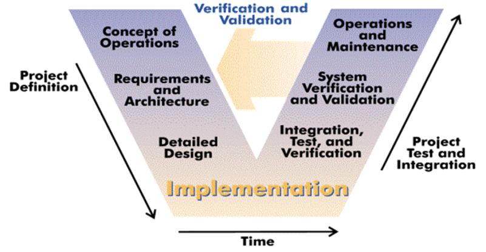

 The Open System Engineering Environment is a tightly integrated, extensible environment supporting Product Line Engineering in the context of an overall systems engineering approach. It is integrated around a simple, user-definable data model providing full life cycle traceability. OSEE's feature set includes Product Line Engineering, configuration management, requirements management, testing, validation, and project management.
All project data is stored in OSEE's user-definable data model which offers revision control, bidirectional traceability across the full product life cycle, project status reporting, and metrics.
The data integration and traceability features OSEE offers enable a coherent view of a project across its full life-cycle.
OSEE offers a full-featured Java API and REST web services for seamless integration of COTS and open-source software enabling developers to harness OSEE's powerful data management capabilities for their own project.
OSEE's Product Line Engineering provides systematic, strategic reuse of engineering artifacts across the full product life cycle. OSEE's advanced branch management capabilities, including automated change reporting and conflict detection, make it possible to control many variants of a project with ease. Since OSEE retains a full revision history of every artifacts in the system, engineers can make and review changes with greater confidence.
Read the OSEE Docs and join the discussion at the forum to get involved in using or developing OSEE.
Our Eclipse project page can be found here: About OSEE
{kind=link}